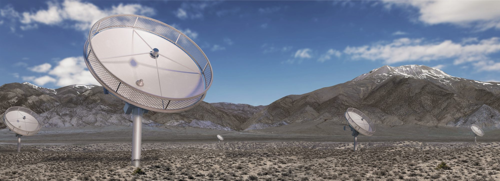

Run tools/build_web.py to render the user guide (docs/user-guide.md).

DSA Sensitivity Calculator
Loading sky model and array configuration…
Run tools/build_web.py to render the methods (docs/model.md).
Survey plan
The Cadenced All-Sky Survey (CASS) covers the sky north of declination −30.45° with 12,850 pointings of 21 minutes on a hexagonal grid. The total budget is five passes, 64,250 pointing-epochs. Epochs are assigned per tile: the sky is divided into 429 tiles of 30 pointings (the polar tile has 10), arranged in 15 declination tiers.
Each plan below is evaluated with the noise model of the calculator. Its figure of merit is the number of continuum sources detected above 5σ in the final full-band image of each tile, using the same source counts as the confusion model. Noise values are medians, over the tiles of each class, of the final full-band total (thermal and confusion) noise with the default RFI model.
Tile classes
- Euclid/HSC footprint: 146 tiles overlapping the Euclid Wide Survey and Hyper Suprime-Cam footprints. They receive 7 epochs in Plan A and the reference plan, 6 to 11 epochs (7 on average) in Plan B, and 4 to 6 epochs in Plan C.
- Galactic plane and bulge: 70 tiles at low Galactic latitude, observed to 7 epochs in every plan (one tile receives 8 in Plan C), which also supports pulsar confirmation and timing.
- Wide area: the remaining 213 tiles, at least 2 epochs per tile.
Plans
Plan A is the default used by the calculator. It keeps 7 epochs in the Euclid/HSC footprint and the Galactic plane and bulge, and assigns the remaining pointings to the wide-area tiles where they add the most 5σ detections, with at least 2 epochs everywhere. Plan B gives the Euclid/HSC footprint the same total time as Plan A but divides it so that the final noise is equal across its tiles. Plan C maximizes the total number of detections, subject to 7 epochs in the Galactic plane and bulge and at least 2 elsewhere. The reference plan sets the wide-area depth by declination alone (4, 3 or 2 epochs) and uses 63,110 of the 64,250 available pointings.
The plan selector under Advanced settings in the calculator switches between plans. The depth at a position is averaged over the tiles within the primary beam, so it varies smoothly across tile boundaries.
DSA specifications
The capabilities below, and every number in the calculator, assume the project baseline at the Final Design Review (DSA Overview at FDR; Hallinan et al. 2026).

Array
| Antennas | 1,650 × 6.155 m |
| Site | Spring Valley, Nevada (latitude +39.55°) |
| Frequency range | 0.70–2.00 GHz, dual linear polarization |
| Baselines | 1,360,425; 10 m to 20.3 km |
| Resolution (natural weighting) | 3.0″ × 2.3″ at 1.35 GHz, zenith |
| Primary beam | 3.36°/νGHz FWHM (2.49° at 1.35 GHz) |
| Sky coverage | δ ≥ −30°, 30,940 deg² |
System
| System temperature | measured Tsys(ν) at zenith on cold sky, interference removed: 21.4 K median, 16.5–26 K across the band; spillover and atmosphere add with zenith angle |
| Aperture efficiency | 0.67 |
| Quantization | 4-bit antenna voltages: efficiency 0.988 for the imaging products and the visibility beams |
Backends
| Radio Camera | imaging: ten 130.2-MHz continuum windows (Stokes I, V), three HI cubes, 500 × 2.6-MHz full-Stokes cubes, 6-s snapshot images |
| Chronoscope, FRB search | bands 880–980, 1310–1510 and 1650–1950 MHz; 122.68-kHz channels, 1-ms sampling; 6 × 10⁶ visibility beams per band |
| Chronoscope, pulsars | untargeted search: 2 × 10⁵ tapered visibility beams per band (13.5″ at 930 MHz, scaling as 1/ν), 1-ms sampling; targeted search and timing: voltage beams over 306.7 MHz, 0.1-ms sampling |
| Pulsar Timing subsystem | four coherently dedispersed voltage beams, each covering 0.70–2.00 GHz, which can be pointed in different directions |
Survey
| Pointings | 12,850 per pass, 21 minutes each, hexagonal grid (1.667° × 1.45°) |
| Budget | 64,250 pointing-epochs (five passes) |